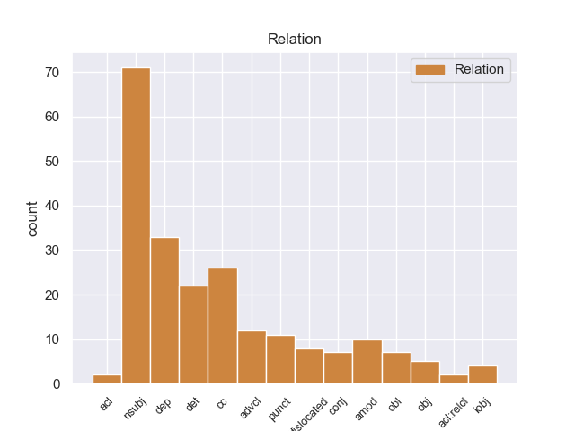
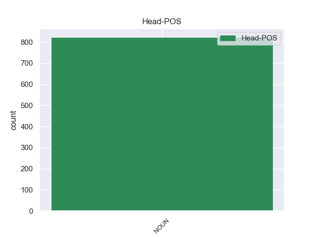
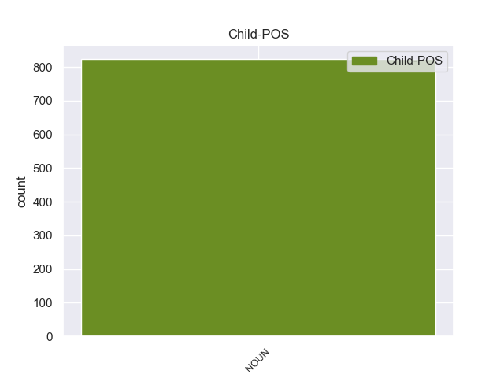

Distribution of features within this leaf



Agreement Rules sorted by frequency.
- When the dependent token is the nominal subject(nsubj) of the head token, and the head token is NOUN and the dependent token is PRON.
1 ताकि _ _ _ _ 0 _ _ _
2 , _ _ _ _ 0 _ _ _
3 पर्यटन _ _ _ _ 0 _ _ _
4 के _ _ _ _ 0 _ _ _
5 दौरान _ _ _ _ 0 _ _ _
6 उन्हें _ _ _ _ 0 _ _ _
7 किसी कोई PRON -- Case=Acc|Number=Sing|Person=3|PronType=Prs 8 nsubj _ _
8 तरह तरह NOUN -- Case=Acc|Gender=Fem|Number=Sing|Person=3 0 _ _ _
9 की _ _ _ _ 0 _ _ _
10 परेशानी _ _ _ _ 0 _ _ _
11 का _ _ _ _ 0 _ _ _
12 सामना _ _ _ _ 0 _ _ _
13 न _ _ _ _ 0 _ _ _
14 करना _ _ _ _ 0 _ _ _
15 पड़े _ _ _ _ 0 _ _ _
16 । _ _ _ _ 0 _ _ _
1 मंत्रालय _ _ _ _ 0 _ _ _
2 में _ _ _ _ 0 _ _ _
3 इस _ _ _ _ 0 _ _ _
4 रिपोर्ट _ _ _ _ 0 _ _ _
5 पर _ _ _ _ 0 _ _ _
6 विचार _ _ _ _ 0 _ _ _
7 - _ _ _ _ 0 _ _ _
8 विमर्श _ _ _ _ 0 _ _ _
9 चल _ _ _ _ 0 _ _ _
10 रहा _ _ _ _ 0 _ _ _
11 है _ _ _ _ 0 _ _ _
12 और _ _ _ _ 0 _ _ _
13 जल्द _ _ _ _ 0 _ _ _
14 ही _ _ _ _ 0 _ _ _
15 कोई कोई PRON -- Case=Nom|Number=Sing|Person=3|PronType=Prs 16 dep _ _
16 निर्णय निर्णय NOUN -- Case=Nom|Gender=Masc|Number=Sing|Person=3 0 _ _ _
17 ले _ _ _ _ 0 _ _ _
18 लिया _ _ _ _ 0 _ _ _
19 जाएगा _ _ _ _ 0 _ _ _
20 । _ _ _ _ 0 _ _ _
1 मुशर्रफ _ _ _ _ 0 _ _ _
2 ने _ _ _ _ 0 _ _ _
3 इस _ _ _ _ 0 _ _ _
4 पर _ _ _ _ 0 _ _ _
5 सहमति _ _ _ _ 0 _ _ _
6 जताई _ _ _ _ 0 _ _ _
7 थी _ _ _ _ 0 _ _ _
8 , _ _ _ _ 0 _ _ _
9 लेकिन _ _ _ _ 0 _ _ _
10 किसी कोई PRON -- Case=Acc|Number=Sing|Person=3|PronType=Prs 13 cc _ _
11 भी _ _ _ _ 0 _ _ _
12 ग़ैर _ _ _ _ 0 _ _ _
13 पाकिस्तानी पाकिस्तानी NOUN -- Case=Acc|Gender=Masc|Number=Sing|Person=3 0 _ _ _
14 को _ _ _ _ 0 _ _ _
15 खान _ _ _ _ 0 _ _ _
16 से _ _ _ _ 0 _ _ _
17 पूछताछ _ _ _ _ 0 _ _ _
18 की _ _ _ _ 0 _ _ _
19 अनुमति _ _ _ _ 0 _ _ _
20 देने _ _ _ _ 0 _ _ _
21 से _ _ _ _ 0 _ _ _
22 इन्कार _ _ _ _ 0 _ _ _
23 कर _ _ _ _ 0 _ _ _
24 दिया _ _ _ _ 0 _ _ _
25 था _ _ _ _ 0 _ _ _
26 । _ _ _ _ 0 _ _ _
1 शरीफ _ _ _ _ 0 _ _ _
2 ने _ _ _ _ 0 _ _ _
3 कहा _ _ _ _ 0 _ _ _
4 कि _ _ _ _ 0 _ _ _
5 ऐसा _ _ _ _ 0 _ _ _
6 कोई कोई PRON -- Case=Nom|Number=Sing|Person=3|PronType=Prs 8 det _ _
7 भी _ _ _ _ 0 _ _ _
8 कदम कदम NOUN -- Case=Nom|Gender=Masc|Number=Sing|Person=3 0 _ _ _
9 लोकतांत्रिक _ _ _ _ 0 _ _ _
10 पाकिस्तान _ _ _ _ 0 _ _ _
11 के _ _ _ _ 0 _ _ _
12 लिए _ _ _ _ 0 _ _ _
13 उनके _ _ _ _ 0 _ _ _
14 छह _ _ _ _ 0 _ _ _
15 वर्ष _ _ _ _ 0 _ _ _
16 लंबे _ _ _ _ 0 _ _ _
17 संघर्ष _ _ _ _ 0 _ _ _
18 पर _ _ _ _ 0 _ _ _
19 पानी _ _ _ _ 0 _ _ _
20 फेर _ _ _ _ 0 _ _ _
21 देगा _ _ _ _ 0 _ _ _
22 । _ _ _ _ 0 _ _ _
1 भारत _ _ _ _ 0 _ _ _
2 और _ _ _ _ 0 _ _ _
3 पाकिस्तान _ _ _ _ 0 _ _ _
4 के _ _ _ _ 0 _ _ _
5 बीच _ _ _ _ 0 _ _ _
6 चल _ _ _ _ 0 _ _ _
7 रही _ _ _ _ 0 _ _ _
8 शांति _ _ _ _ 0 _ _ _
9 वार्ता _ _ _ _ 0 _ _ _
10 के _ _ _ _ 0 _ _ _
11 बीच _ _ _ _ 0 _ _ _
12 अब _ _ _ _ 0 _ _ _
13 वह _ _ _ _ 0 _ _ _
14 इस _ _ _ _ 0 _ _ _
15 तरह _ _ _ _ 0 _ _ _
16 के _ _ _ _ 0 _ _ _
17 हमले _ _ _ _ 0 _ _ _
18 को _ _ _ _ 0 _ _ _
19 खुद _ _ _ _ 0 _ _ _
20 न _ _ _ _ 0 _ _ _
21 करके _ _ _ _ 0 _ _ _
22 किसी कोई PRON -- Case=Acc|Number=Sing|Person=3|PronType=Prs 23 advcl _ _
23 अन्य अन्य NOUN -- Case=Acc|Number=Sing|Person=3 0 _ _ _
24 को _ _ _ _ 0 _ _ _
25 कॉन्ट्रैक्ट _ _ _ _ 0 _ _ _
26 दे _ _ _ _ 0 _ _ _
27 कर _ _ _ _ 0 _ _ _
28 सांप्रदायिक _ _ _ _ 0 _ _ _
29 सद्भाव _ _ _ _ 0 _ _ _
30 बिगाड़ने _ _ _ _ 0 _ _ _
31 के _ _ _ _ 0 _ _ _
32 लिए _ _ _ _ 0 _ _ _
33 हिंसक _ _ _ _ 0 _ _ _
34 घटनाओं _ _ _ _ 0 _ _ _
35 को _ _ _ _ 0 _ _ _
36 अंजाम _ _ _ _ 0 _ _ _
37 दे _ _ _ _ 0 _ _ _
38 रही _ _ _ _ 0 _ _ _
39 है _ _ _ _ 0 _ _ _
40 । _ _ _ _ 0 _ _ _
1 किसी कोई PRON -- Case=Acc|Number=Sing|Person=3|PronType=Prs 4 punct _ _
2 भरोसेमंद _ _ _ _ 0 _ _ _
3 फायनेंशियल _ _ _ _ 0 _ _ _
4 कंसलटेंट कंसलटेंट NOUN -- Case=Acc|Gender=Masc|Number=Sing|Person=3 0 _ _ _
5 को _ _ _ _ 0 _ _ _
6 चुनें _ _ _ _ 0 _ _ _
7 । _ _ _ _ 0 _ _ _
1 इसी _ _ _ _ 0 _ _ _
2 तरह _ _ _ _ 0 _ _ _
3 इंडिया _ _ _ _ 0 _ _ _
4 शाइनिंग _ _ _ _ 0 _ _ _
5 अभियान _ _ _ _ 0 _ _ _
6 पर _ _ _ _ 0 _ _ _
7 कैग _ _ _ _ 0 _ _ _
8 ने _ _ _ _ 0 _ _ _
9 अपनी _ _ _ _ 0 _ _ _
10 रिपोर्ट _ _ _ _ 0 _ _ _
11 में _ _ _ _ 0 _ _ _
12 कहा _ _ _ _ 0 _ _ _
13 कि _ _ _ _ 0 _ _ _
14 भारतीय _ _ _ _ 0 _ _ _
15 संविधान _ _ _ _ 0 _ _ _
16 के _ _ _ _ 0 _ _ _
17 अनुसार _ _ _ _ 0 _ _ _
18 बजट _ _ _ _ 0 _ _ _
19 में _ _ _ _ 0 _ _ _
20 दिखाए _ _ _ _ 0 _ _ _
21 गए _ _ _ _ 0 _ _ _
22 खर्च _ _ _ _ 0 _ _ _
23 के _ _ _ _ 0 _ _ _
24 अतिरिक्त _ _ _ _ 0 _ _ _
25 और _ _ _ _ 0 _ _ _
26 किसी कोई PRON -- Case=Acc|Number=Sing|Person=3|PronType=Prs 27 amod _ _
27 प्रकार प्रकार NOUN -- Case=Acc|Gender=Masc|Number=Sing|Person=3 0 _ _ _
28 का _ _ _ _ 0 _ _ _
29 खर्च _ _ _ _ 0 _ _ _
30 नहीं _ _ _ _ 0 _ _ _
31 किया _ _ _ _ 0 _ _ _
32 जाना _ _ _ _ 0 _ _ _
33 चाहिए _ _ _ _ 0 _ _ _
34 और _ _ _ _ 0 _ _ _
35 यदि _ _ _ _ 0 _ _ _
36 करना _ _ _ _ 0 _ _ _
37 अनिवार्य _ _ _ _ 0 _ _ _
38 हो _ _ _ _ 0 _ _ _
39 तो _ _ _ _ 0 _ _ _
40 अनुपूरक _ _ _ _ 0 _ _ _
41 माँग _ _ _ _ 0 _ _ _
42 के _ _ _ _ 0 _ _ _
43 रूप _ _ _ _ 0 _ _ _
44 में _ _ _ _ 0 _ _ _
45 उसे _ _ _ _ 0 _ _ _
46 संसद _ _ _ _ 0 _ _ _
47 के _ _ _ _ 0 _ _ _
48 समक्ष _ _ _ _ 0 _ _ _
49 अनुमोदन _ _ _ _ 0 _ _ _
50 के _ _ _ _ 0 _ _ _
51 लिए _ _ _ _ 0 _ _ _
52 प्रस्तुत _ _ _ _ 0 _ _ _
53 किया _ _ _ _ 0 _ _ _
54 जाना _ _ _ _ 0 _ _ _
55 चाहिए _ _ _ _ 0 _ _ _
56 । _ _ _ _ 0 _ _ _
1 राव _ _ _ _ 0 _ _ _
2 ने _ _ _ _ 0 _ _ _
3 कहा _ _ _ _ 0 _ _ _
4 कि _ _ _ _ 0 _ _ _
5 ' _ _ _ _ 0 _ _ _
6 अगर _ _ _ _ 0 _ _ _
7 किसी _ _ _ _ 0 _ _ _
8 दूसरे _ _ _ _ 0 _ _ _
9 संप्रदाय _ _ _ _ 0 _ _ _
10 की _ _ _ _ 0 _ _ _
11 पिछड़ी _ _ _ _ 0 _ _ _
12 जाति _ _ _ _ 0 _ _ _
13 के _ _ _ _ 0 _ _ _
14 किसी _ _ _ _ 0 _ _ _
15 व्यक्ति _ _ _ _ 0 _ _ _
16 को _ _ _ _ 0 _ _ _
17 आरक्षण _ _ _ _ 0 _ _ _
18 मिल _ _ _ _ 0 _ _ _
19 सकता _ _ _ _ 0 _ _ _
20 है _ _ _ _ 0 _ _ _
21 तो _ _ _ _ 0 _ _ _
22 आखिर _ _ _ _ 0 _ _ _
23 अल्पसंख्यक _ _ _ _ 0 _ _ _
24 समुदाय _ _ _ _ 0 _ _ _
25 ( _ _ _ _ 0 _ _ _
26 मुस्लिम _ _ _ _ 0 _ _ _
27 ) _ _ _ _ 0 _ _ _
28 के _ _ _ _ 0 _ _ _
29 किसी कोई PRON -- Case=Acc|Number=Sing|Person=3|PronType=Prs 30 dislocated _ _
30 व्यक्ति व्यक्ति NOUN -- Case=Acc|Gender=Masc|Number=Sing|Person=3 0 _ _ _
31 को _ _ _ _ 0 _ _ _
32 यह _ _ _ _ 0 _ _ _
33 सुविधा _ _ _ _ 0 _ _ _
34 क्यों _ _ _ _ 0 _ _ _
35 नहीं _ _ _ _ 0 _ _ _
36 मिलनी _ _ _ _ 0 _ _ _
37 चाहिए _ _ _ _ 0 _ _ _
1 फिल्मों _ _ _ _ 0 _ _ _
2 और _ _ _ _ 0 _ _ _
3 टीवी _ _ _ _ 0 _ _ _
4 सीरियलों _ _ _ _ 0 _ _ _
5 में _ _ _ _ 0 _ _ _
6 आपने _ _ _ _ 0 _ _ _
7 अक्सर _ _ _ _ 0 _ _ _
8 देखा _ _ _ _ 0 _ _ _
9 होगा _ _ _ _ 0 _ _ _
10 कि _ _ _ _ 0 _ _ _
11 किसी _ _ _ _ 0 _ _ _
12 दुर्घटनावश _ _ _ _ 0 _ _ _
13 किसी कोई PRON -- Case=Acc|Number=Sing|Person=3|PronType=Prs 14 obl _ _
14 पात्र पात्र NOUN -- Case=Acc|Gender=Masc|Number=Sing|Person=3 0 _ _ _
15 की _ _ _ _ 0 _ _ _
16 याद्दाश्त _ _ _ _ 0 _ _ _
17 चली _ _ _ _ 0 _ _ _
18 जाती _ _ _ _ 0 _ _ _
19 है _ _ _ _ 0 _ _ _
20 । _ _ _ _ 0 _ _ _
1 उन्हें _ _ _ _ 0 _ _ _
2 उम्मीद _ _ _ _ 0 _ _ _
3 थी _ _ _ _ 0 _ _ _
4 कि _ _ _ _ 0 _ _ _
5 इस _ _ _ _ 0 _ _ _
6 बैठक _ _ _ _ 0 _ _ _
7 में _ _ _ _ 0 _ _ _
8 पार्टी _ _ _ _ 0 _ _ _
9 का _ _ _ _ 0 _ _ _
10 शीर्ष _ _ _ _ 0 _ _ _
11 नेतृत्व _ _ _ _ 0 _ _ _
12 उन्हें _ _ _ _ 0 _ _ _
13 कोई कोई PRON -- Case=Nom|Number=Sing|Person=3|PronType=Prs 14 iobj _ _
14 दिशा दिशा NOUN -- Case=Nom|Gender=Fem|Number=Sing|Person=3 0 _ _ _
15 देगा _ _ _ _ 0 _ _ _
16 और _ _ _ _ 0 _ _ _
17 विचारधारा _ _ _ _ 0 _ _ _
18 के _ _ _ _ 0 _ _ _
19 स्तर _ _ _ _ 0 _ _ _
20 पर _ _ _ _ 0 _ _ _
21 छह _ _ _ _ 0 _ _ _
22 साल _ _ _ _ 0 _ _ _
23 के _ _ _ _ 0 _ _ _
24 कुहासे _ _ _ _ 0 _ _ _
25 को _ _ _ _ 0 _ _ _
26 छांटने _ _ _ _ 0 _ _ _
27 का _ _ _ _ 0 _ _ _
28 प्रयास _ _ _ _ 0 _ _ _
29 करेगा _ _ _ _ 0 _ _ _
30 । _ _ _ _ 0 _ _ _
1 आरएसएस _ _ _ _ 0 _ _ _
2 प्रमुख _ _ _ _ 0 _ _ _
3 ने _ _ _ _ 0 _ _ _
4 यह _ _ _ _ 0 _ _ _
5 बात _ _ _ _ 0 _ _ _
6 किसी कोई PRON -- Case=Acc|Number=Sing|Person=3|PronType=Prs 7 obj _ _
7 नेता नेता NOUN -- Case=Acc|Gender=Masc|Number=Sing|Person=3 0 _ _ _
8 का _ _ _ _ 0 _ _ _
9 नाम _ _ _ _ 0 _ _ _
10 लिए _ _ _ _ 0 _ _ _
11 बगैर _ _ _ _ 0 _ _ _
12 कही _ _ _ _ 0 _ _ _
13 । _ _ _ _ 0 _ _ _
1 विधानसभा _ _ _ _ 0 _ _ _
2 भंग _ _ _ _ 0 _ _ _
3 करने _ _ _ _ 0 _ _ _
4 की _ _ _ _ 0 _ _ _
5 बूटा _ _ _ _ 0 _ _ _
6 सिंह _ _ _ _ 0 _ _ _
7 की _ _ _ _ 0 _ _ _
8 सिफारिशों _ _ _ _ 0 _ _ _
9 के _ _ _ _ 0 _ _ _
10 आधार _ _ _ _ 0 _ _ _
11 के _ _ _ _ 0 _ _ _
12 बारे _ _ _ _ 0 _ _ _
13 में _ _ _ _ 0 _ _ _
14 खंडपीठ _ _ _ _ 0 _ _ _
15 द्वारा _ _ _ _ 0 _ _ _
16 पूछे _ _ _ _ 0 _ _ _
17 जाने _ _ _ _ 0 _ _ _
18 पर _ _ _ _ 0 _ _ _
19 उन्होंने _ _ _ _ 0 _ _ _
20 कहा _ _ _ _ 0 _ _ _
21 कि _ _ _ _ 0 _ _ _
22 जब _ _ _ _ 0 _ _ _
23 संवैधानिक _ _ _ _ 0 _ _ _
24 पद _ _ _ _ 0 _ _ _
25 पर _ _ _ _ 0 _ _ _
26 बैठा _ _ _ _ 0 _ _ _
27 कोई कोई PRON -- Case=Nom|Number=Sing|Person=3|PronType=Prs 28 acl _ _
28 व्यक्ति व्यक्ति NOUN -- Case=Nom|Gender=Masc|Number=Sing|Person=3 0 _ _ _
29 कोई _ _ _ _ 0 _ _ _
30 निर्णय _ _ _ _ 0 _ _ _
31 लेता _ _ _ _ 0 _ _ _
32 है _ _ _ _ 0 _ _ _
33 तो _ _ _ _ 0 _ _ _
34 यह _ _ _ _ 0 _ _ _
35 माना _ _ _ _ 0 _ _ _
36 जाता _ _ _ _ 0 _ _ _
37 है _ _ _ _ 0 _ _ _
38 कि _ _ _ _ 0 _ _ _
39 इसके _ _ _ _ 0 _ _ _
40 कुछ _ _ _ _ 0 _ _ _
41 आधार _ _ _ _ 0 _ _ _
42 रहें _ _ _ _ 0 _ _ _
43 होंगे _ _ _ _ 0 _ _ _
44 । _ _ _ _ 0 _ _ _
1 घर घर NOUN -- Case=Acc|Gender=Masc|Number=Sing|Person=3 0 _ _ _
2 या _ _ _ _ 0 _ _ _
3 होटल _ _ _ _ 0 _ _ _
4 के _ _ _ _ 0 _ _ _
5 किसी कोई PRON -- Case=Acc|Number=Sing|Person=3|PronType=Prs 1 conj _ _
6 कमरे _ _ _ _ 0 _ _ _
7 में _ _ _ _ 0 _ _ _
8 ताश _ _ _ _ 0 _ _ _
9 खेलना _ _ _ _ 0 _ _ _
10 कोई _ _ _ _ 0 _ _ _
11 गुनाह _ _ _ _ 0 _ _ _
12 नहीं _ _ _ _ 0 _ _ _
13 है _ _ _ _ 0 _ _ _
14 . _ _ _ _ 0 _ _ _
1 ऐसे _ _ _ _ 0 _ _ _
2 लोग लोग NOUN -- Case=Nom|Gender=Masc|Number=Plur|Person=3 0 _ _ _
3 जिनका _ _ _ _ 0 _ _ _
4 जजों _ _ _ _ 0 _ _ _
5 की _ _ _ _ 0 _ _ _
6 चयन _ _ _ _ 0 _ _ _
7 प्रक्रिया _ _ _ _ 0 _ _ _
8 से _ _ _ _ 0 _ _ _
9 कोई कोई PRON -- Case=Nom|Number=Sing|Person=3|PronType=Prs 2 acl:relcl _ _
10 लेना _ _ _ _ 0 _ _ _
11 - _ _ _ _ 0 _ _ _
12 देना _ _ _ _ 0 _ _ _
13 नहीं _ _ _ _ 0 _ _ _
14 है _ _ _ _ 0 _ _ _
15 , _ _ _ _ 0 _ _ _
16 इन _ _ _ _ 0 _ _ _
17 लोगों _ _ _ _ 0 _ _ _
18 का _ _ _ _ 0 _ _ _
19 बायोडाटा _ _ _ _ 0 _ _ _
20 लेकर _ _ _ _ 0 _ _ _
21 आते _ _ _ _ 0 _ _ _
22 हैं _ _ _ _ 0 _ _ _
23 और _ _ _ _ 0 _ _ _
24 बताते _ _ _ _ 0 _ _ _
25 हैं _ _ _ _ 0 _ _ _
26 कि _ _ _ _ 0 _ _ _
27 यही _ _ _ _ 0 _ _ _
28 जज _ _ _ _ 0 _ _ _
29 बनने _ _ _ _ 0 _ _ _
30 के _ _ _ _ 0 _ _ _
31 लिए _ _ _ _ 0 _ _ _
32 सबसे _ _ _ _ 0 _ _ _
33 उपयुक्त _ _ _ _ 0 _ _ _
34 प्रत्याशी _ _ _ _ 0 _ _ _
35 हैं _ _ _ _ 0 _ _ _
36 । _ _ _ _ 0 _ _ _
Disagree Examples:
1 उन्होंने _ _ _ _ 0 _ _ _
2 कहा _ _ _ _ 0 _ _ _
3 कि _ _ _ _ 0 _ _ _
4 संघ _ _ _ _ 0 _ _ _
5 परिवार परिवार NOUN -- Case=Acc|Gender=Masc|Number=Sing|Person=3 0 _ _ _
6 और _ _ _ _ 0 _ _ _
7 उसके वह PRON -- Case=Acc,Gen|Gender=Masc|Number=Sing|Person=3|Poss=Yes|PronType=Prs 5 conj _ _
8 नेतृत्व _ _ _ _ 0 _ _ _
9 के _ _ _ _ 0 _ _ _
10 लिए _ _ _ _ 0 _ _ _
11 बेहतर _ _ _ _ 0 _ _ _
12 होगा _ _ _ _ 0 _ _ _
13 कि _ _ _ _ 0 _ _ _
14 वह _ _ _ _ 0 _ _ _
15 पहले _ _ _ _ 0 _ _ _
16 अपने _ _ _ _ 0 _ _ _
17 घर _ _ _ _ 0 _ _ _
18 को _ _ _ _ 0 _ _ _
19 ठीक _ _ _ _ 0 _ _ _
20 करे _ _ _ _ 0 _ _ _
21 । _ _ _ _ 0 _ _ _
1 इसी _ _ _ _ 0 _ _ _
2 बीच _ _ _ _ 0 _ _ _
3 सावित्री _ _ _ _ 0 _ _ _
4 देवी _ _ _ _ 0 _ _ _
5 किसी कोई PRON -- Case=Nom|Number=Sing|Person=3|PronType=Prs 6 nsubj _ _
6 समस्या समस्या NOUN -- Case=Acc|Gender=Fem|Number=Sing|Person=3 0 _ _ _
7 के _ _ _ _ 0 _ _ _
8 चलते _ _ _ _ 0 _ _ _
9 वापिस _ _ _ _ 0 _ _ _
10 कोटद्वार _ _ _ _ 0 _ _ _
11 जाकर _ _ _ _ 0 _ _ _
12 रहने _ _ _ _ 0 _ _ _
13 लगी _ _ _ _ 0 _ _ _
14 . _ _ _ _ 0 _ _ _
1 ३४ _ _ _ _ 0 _ _ _
2 फीसदी _ _ _ _ 0 _ _ _
3 बच्चों _ _ _ _ 0 _ _ _
4 का _ _ _ _ 0 _ _ _
5 जन्म _ _ _ _ 0 _ _ _
6 बिना _ _ _ _ 0 _ _ _
7 किसी कोई PRON -- Case=Nom|Number=Sing|Person=3|PronType=Prs 10 dep _ _
8 पूर्व _ _ _ _ 0 _ _ _
9 चिकित्सकीय _ _ _ _ 0 _ _ _
10 परामर्श परामर्श NOUN -- Case=Acc|Gender=Masc|Number=Sing|Person=3 0 _ _ _
11 के _ _ _ _ 0 _ _ _
12 होता _ _ _ _ 0 _ _ _
13 है _ _ _ _ 0 _ _ _
14 और _ _ _ _ 0 _ _ _
15 ५१ _ _ _ _ 0 _ _ _
16 फीसदी _ _ _ _ 0 _ _ _
17 कुपोषण _ _ _ _ 0 _ _ _
18 के _ _ _ _ 0 _ _ _
19 शिकार _ _ _ _ 0 _ _ _
20 हैं _ _ _ _ 0 _ _ _
21 . _ _ _ _ 0 _ _ _
1 किसी कोई PRON -- Case=Nom|Number=Sing|Person=3|PronType=Prs 3 punct _ _
2 भी _ _ _ _ 0 _ _ _
3 दुकानदार दुकानदार NOUN -- Case=Acc|Gender=Masc|Number=Sing|Person=3 0 _ _ _
4 को _ _ _ _ 0 _ _ _
5 फुटपाथ _ _ _ _ 0 _ _ _
6 पर _ _ _ _ 0 _ _ _
7 तख्त _ _ _ _ 0 _ _ _
8 आदि _ _ _ _ 0 _ _ _
9 लगाने _ _ _ _ 0 _ _ _
10 की _ _ _ _ 0 _ _ _
11 पाबंदी _ _ _ _ 0 _ _ _
12 थी _ _ _ _ 0 _ _ _
13 . _ _ _ _ 0 _ _ _
1 ऑर्ट _ _ _ _ 0 _ _ _
2 गैलरी _ _ _ _ 0 _ _ _
3 में _ _ _ _ 0 _ _ _
4 आयोजित _ _ _ _ 0 _ _ _
5 इस _ _ _ _ 0 _ _ _
6 भोज _ _ _ _ 0 _ _ _
7 में _ _ _ _ 0 _ _ _
8 आइसलैंड _ _ _ _ 0 _ _ _
9 वासियों _ _ _ _ 0 _ _ _
10 के _ _ _ _ 0 _ _ _
11 लिए _ _ _ _ 0 _ _ _
12 कलाम _ _ _ _ 0 _ _ _
13 किसी कोई PRON -- Case=Acc|Number=Sing|Person=3|PronType=Prs 14 nsubj _ _
14 उत्सव उत्सव NOUN -- Case=Nom|Gender=Masc|Number=Sing|Person=3 0 _ _ _
15 सा _ _ _ _ 0 _ _ _
16 माहौल _ _ _ _ 0 _ _ _
17 लेकर _ _ _ _ 0 _ _ _
18 आए _ _ _ _ 0 _ _ _
19 । _ _ _ _ 0 _ _ _